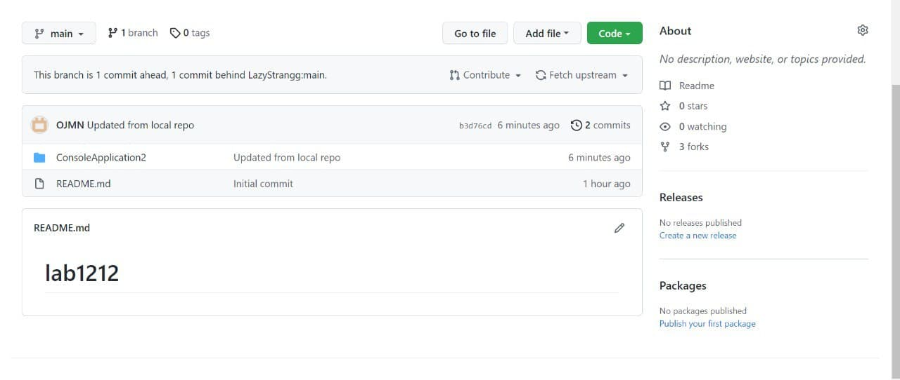
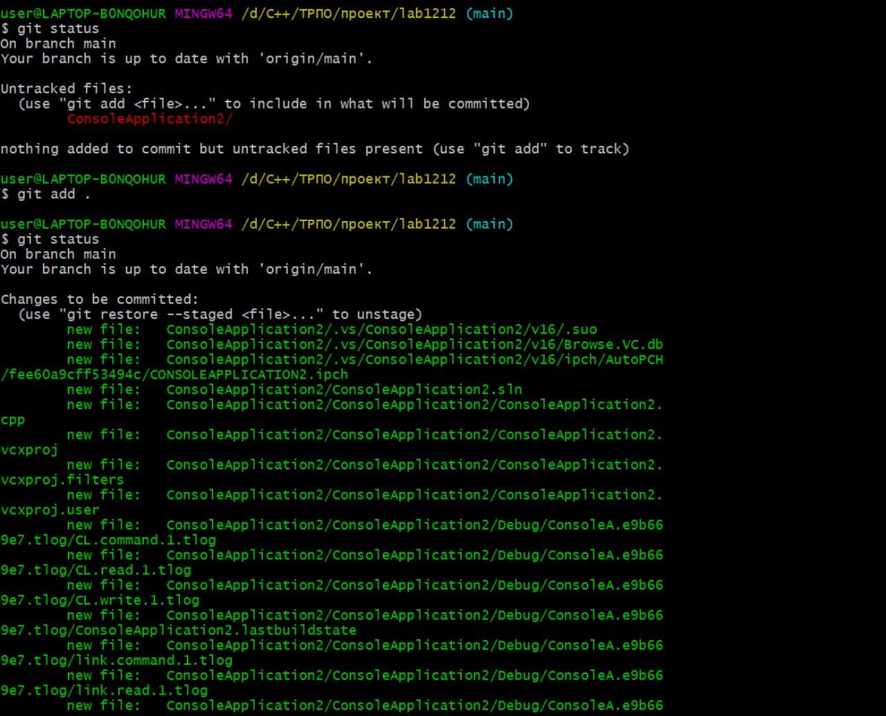
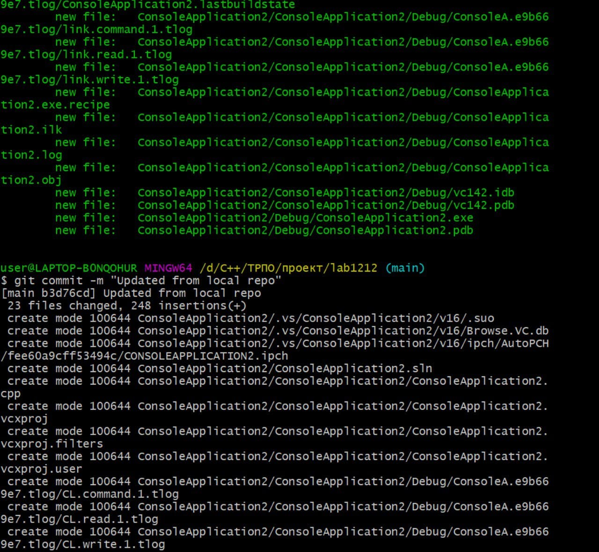
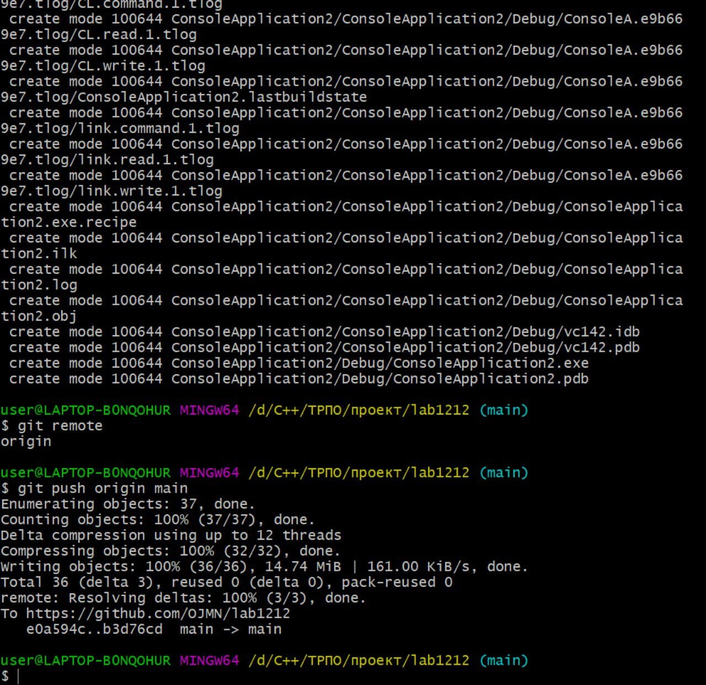

Создание ветки напарника и добавление в неё файла
Просмотр состояния репозитория, индексирование изменений, просмотр текущего состояния репозитория
Фиксация изменений в репозиторий
Просмотр удаленных репозиториев в Git и отправка изменений в удаленный репозиторий